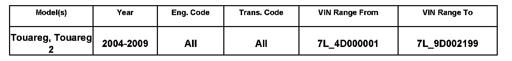
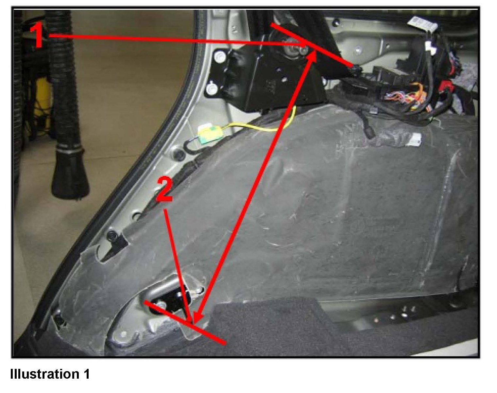
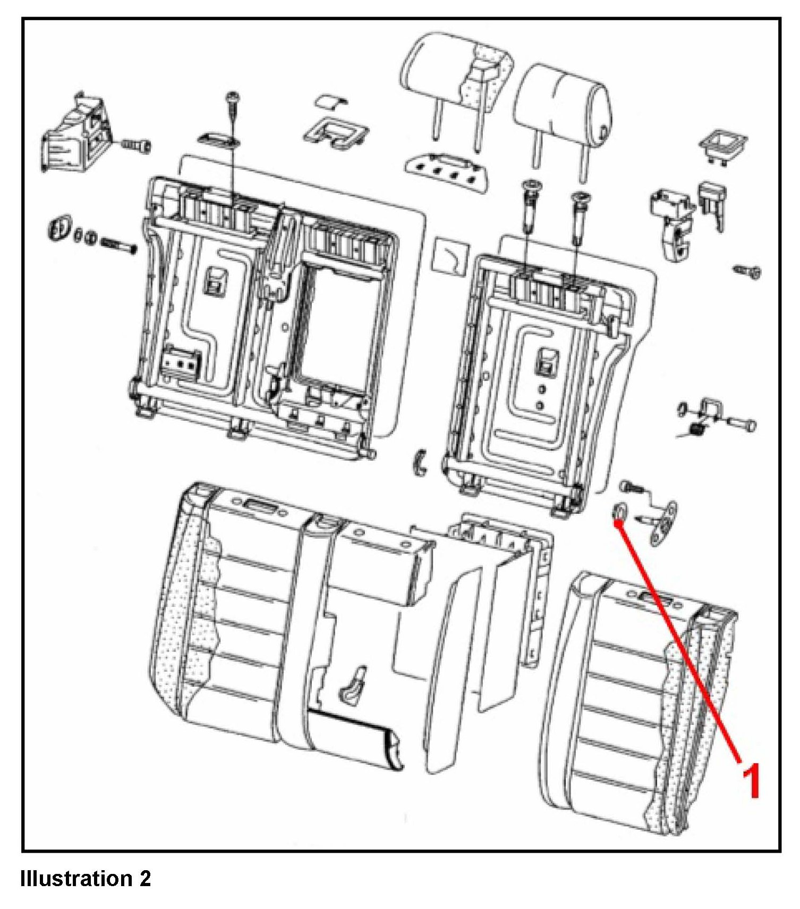
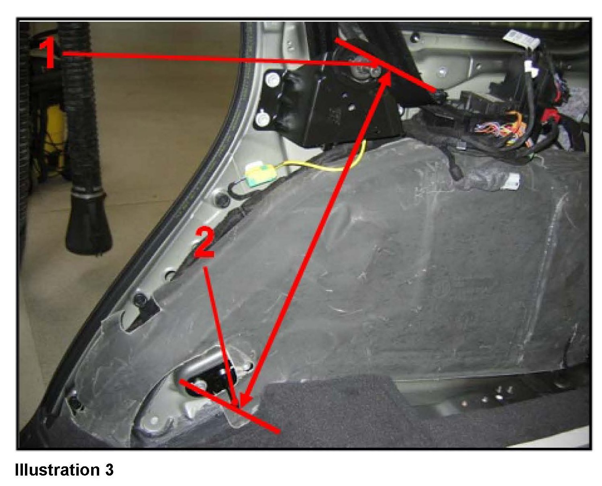
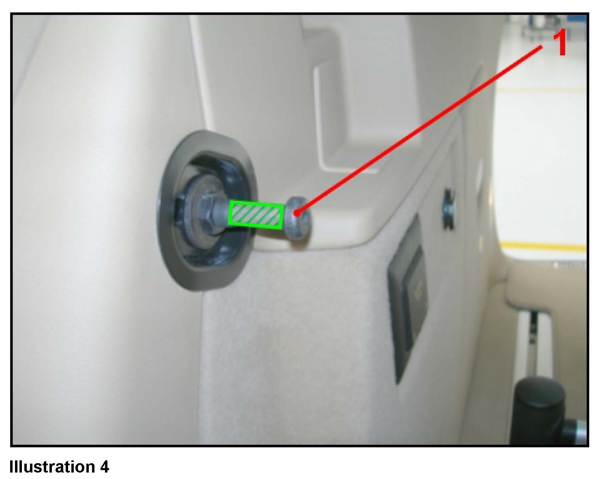
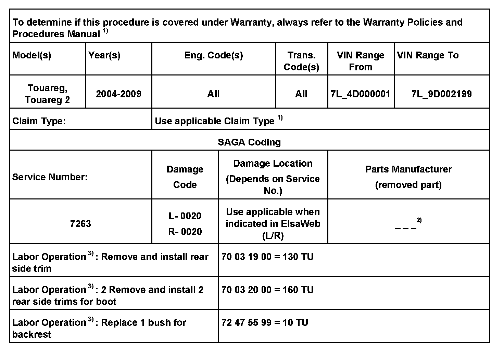
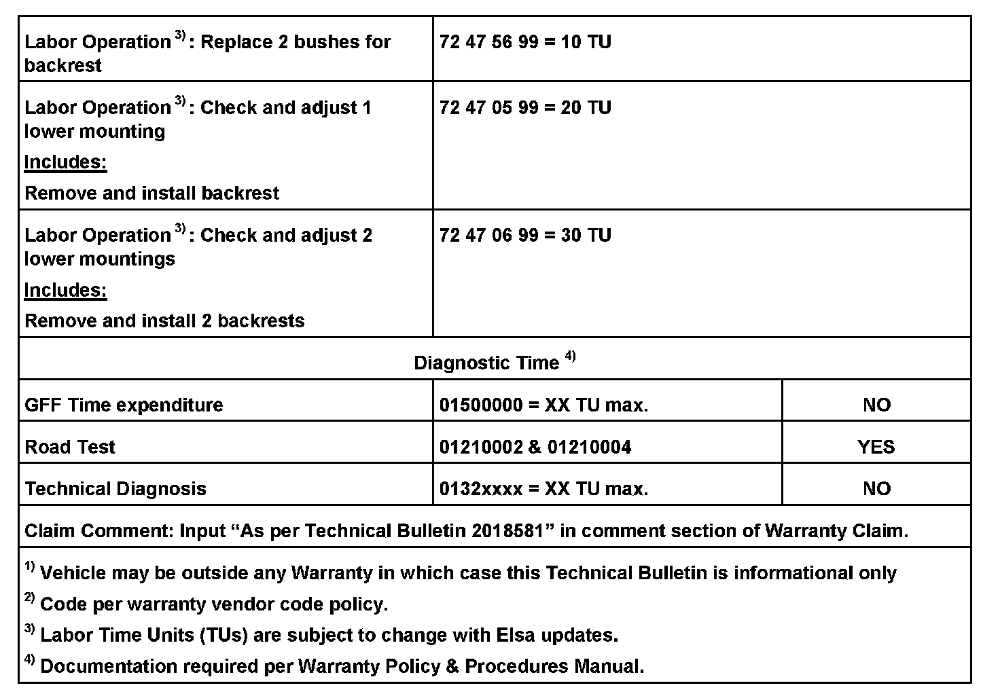
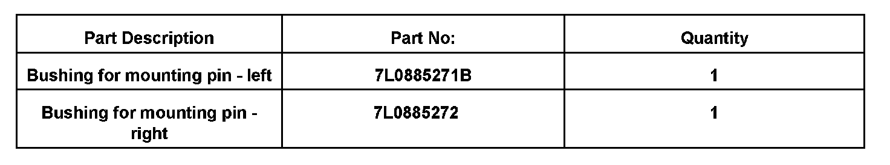

Interior - Rear Seat Back Rest Creaking/Rattling Noises
72 08 02Aug. 22, 2008
2018581

Vehicle Information
Condition
Seat Backrest Rear - Noises
Creaking/rattling noises from rear seat backrest.
Technical Background
Incorrect adjustment of lower mounting for rear seat backrest.
Production Solution
Improved size of rear backrest locks.
^ From VIN No.: 7L_9D002200
Service
Adjust the lower mounting for the rear backrest

Gap between upper mounting pin and tip of lower mounting pin should be 495 mm (19.5in.) - measured from upper pin (including complete bolt head - see illustration 1, No. 1) to tip of lower pin (see illustration 1, No. 2).
^ Fold down rear backrest(s) and test drive vehicle.
If noise is present, the rear backrest IS NOT the cause.
^ Locate the source of noise and repair problem.
If no noise is heard during road test, proceed as follows:
^ Remove rear backrest, see Repair Manual Group 72 Seats and Frames in ElsaWeb.
^ Remove side trim, see Repair Manual Group 72 Seats and Frames in ElsaWeb.

^ Inspect backrest, check the pivot bolt bushing (see illustration 2, No. 1) for damage/wear and replace if necessary.

^ Measure gap between upper mounting pin (see illustration 3 No. 1) and tip of lower mounting pin (see illustration 3 No. 2).
^ Change the gap by adjusting the lower mounting to 495 mm (19.5in.), see illustration 3.

^ Wrap thin adhesive tape, around striker pin (see illustration 4 No. 1) (green hatched area).
^ Reinstall seat assembly, fold down and lock rear backrest - check whether striker pin (see illustration 4, No. 1) is aligned into the latch of rear backrest.
^ Loosen attachment and fold down rear backrest again. Check for chafe marks on upper mounting pin (adhesive tape).
If striker pin is aligned properly into the latch, and if there are no chafe marks on the mounting pin (adhesive tape):
^ Repair successful, remove the adhesive tape.
^ Install rear backrest.
^ Install side trim, see Repair Manual Group 72 Seats and Frames in ElsaWeb.
^ Install rear backrest, see Repair Manual Group 72 Seats and Frames in ElsaWeb.
If pin does not align properly into latch, and there are chafe marks on the pin (adhesive tape):
^ Remove rear backrest again.
^ Adjust lower mounting as follows:
^ If abrasion appears in the upper area, move the lower mounting up.
^ If abrasion appears in the lower area, move the lower mounting down.
^ Remove adhesive tape.
^ Install side trim, see Repair Manual Group 72 Seats and Frames in ElsaWeb.
^ Install rear backrest, see Repair Manual Group 72 Seats and Frames in ElsaWeb.


Warranty

Required Parts and Tools
No Special Tools required.
Additional Information
All part and service references provided in this Technical Bulletin are subject to change and/or removal.
Always check with your Parts Dept. and Repair Manuals for the latest information.